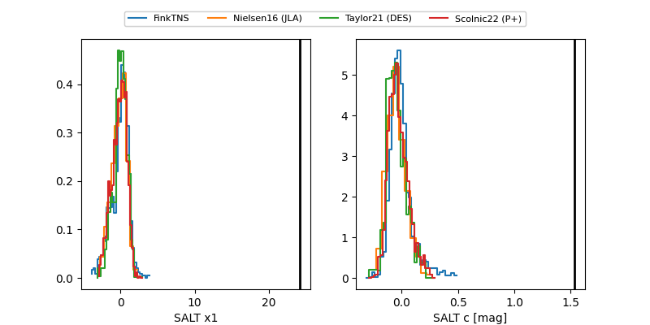

FINK: ZTF25absekjp
Lasair: ZTF25absekjp
ALeRCE: ZTF25absekjp
TNS: 2025yaf
YSE: 2025yaf
ZTF25absekjp (ztf,fink)
2025yaf (tns,yse)
equatorial (ra, dec) = (311.0126,-12.55417)
galactic (l, b) = (34.0338,-30.59697)

last atlaso=19.45, ztfg=18.97
2 atlaso, 2 ztfg detections